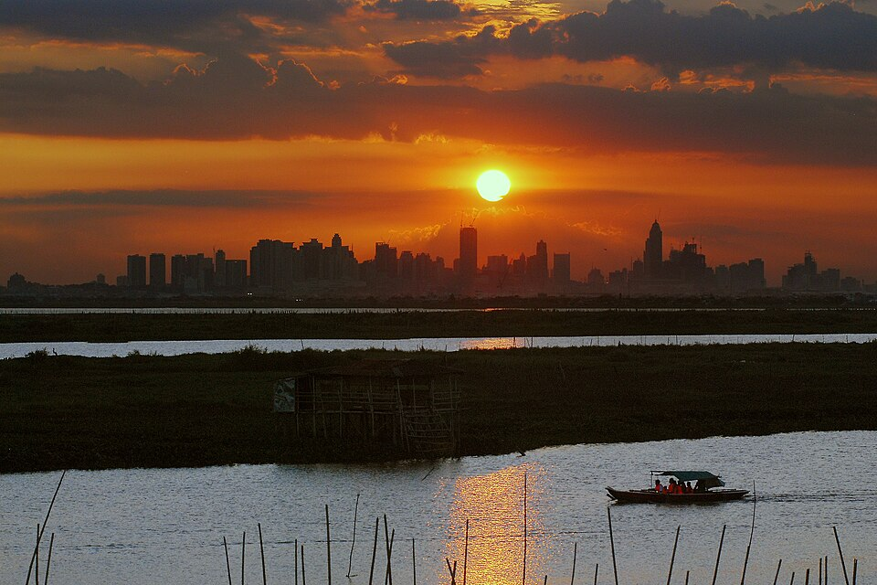
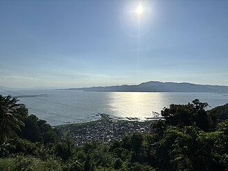

Laguna Lake Explorer
Explore Laguna de Bay in 3D, look up past water-quality readings, and find news about the lake.
WITM 101 Advanced Web Design and Programming
Patrick A. Cueto, Mike Angelo Monzon, and Christine Villanueva

What does the app help us do?
Explore the lake
See the bays, nearby communities, and surrounding terrain on a 3D satellite map.
Look up a reading
Choose a monitoring station and month to see what the Laguna Lake Development Authority (LLDA) reported.
Compare over time
Follow a station’s readings across months and open the report pages behind them.
Find related news
Open the landing-page news card to find coverage about Laguna de Bay and visit the original articles.
How the map is built
MapLibre GL JS assembles small map images called tiles as you move and zoom. Our code adds terrain, station markers, and camera controls.
What you see
Explore uses Esri satellite imagery. Water Quality uses an OpenStreetMap street map so station markers are easier to spot.
What gives it depth
AWS elevation data shapes the terrain. OpenFreeMap provides buildings when you zoom in.
Where stations appear
Station markers use coordinates recorded in the historical research package.
The browser loads the map tiles and research files. A Vercel function fetches the news feed.
APIs, feeds, and map services
Each service supplies a different part of the app, from satellite imagery to headlines.
- MapLibre GL JS 5.6.2
- Browser map library
https://unpkg.com/maplibre-gl@5.6.2/dist/maplibre-gl.js - Esri World Imagery
- Satellite raster tiles
https://server.arcgisonline.com/ArcGIS/rest/services/World_Imagery/MapServer/tile/{z}/{y}/{x} - OpenStreetMap
- Water Quality raster tiles
https://tile.openstreetmap.org/{z}/{x}/{y}.png - AWS Terrain Tiles
- Terrarium elevation tiles
https://s3.amazonaws.com/elevation-tiles-prod/terrarium/{z}/{x}/{y}.png - OpenFreeMap
- Vector tiles and building footprints
https://tiles.openfreemap.org/planet - Google News RSS
- Supplies Laguna Lake headlines, publishers, dates, and article links.
https://news.google.com/rss/search - Laguna Lake News API
- Our Vercel endpoint turns Google News RSS into JSON the landing page can display. Media Cloud can serve as a fallback when configured.
/api/news/laguna-lake
Tile templates use zoom, column, and row coordinates. Esri orders them as row then column.
What the map code controls
One part sets the starting camera view. The other tells the map where to download satellite images.
Map initialization
The camera settings control where the view starts, how far you can zoom, and how much you can tilt.
const map = new maplibregl.Map({
container: 'map', style, ...landingCamera, maxPitch: 78, minZoom: 3, maxZoom: 19, antialias: true,
renderWorldCopies: false, maxBounds: [[94, -7], [153, 32]],
attributionControl: window.matchMedia(mobileLayout).matches ? { compact: true } : true,
transformCameraUpdate: ({ zoom, pitch }) => {
const explorer = $('explorerUI');
const onLanding = explorer.hidden || explorer.classList.contains('explorer-leaving');
return { pitch: Math.min(pitch, onLanding ? landingCamera.pitch : pitchLimit(zoom)) };
}
});Satellite source
The satellite source lists the Esri tile address, the area covered, and the imagery credit.
satellite: {
type: 'raster',
tiles: ['https://server.arcgisonline.com/ArcGIS/rest/services/World_Imagery/MapServer/tile/{z}/{y}/{x}'],
tileSize: 256, maxzoom: 19, bounds: coverageBounds,
attribution: 'Imagery © <a href="https://www.arcgis.com/home/item.html?id=10df2279f9684e4a9f6a7f08febac2a9">Esri</a>, Vantor, Earthstar Geographics, and the GIS User Community'
}Excerpts from app.js. The flat Water Quality raster source is configured in water-quality.js.
Take a tour of the lake
- Click Explore to enter the map.
- Choose a bay in the Exploration Console to fly to that area.
- Switch between 3D and top-down views, or use the elevation toggle to see how the terrain changes.
Zoom out with the regional shortcuts to view the Philippines or the area PAGASA monitors for tropical cyclones.

Read the water-quality map
- Choose a month and a measurement, such as dissolved oxygen.
- Click a station to see its available readings and the original report reference.
- Use the colors to compare eligible readings with the DENR Class C guideline. Green meets the guideline, red falls outside it, and gray means the reading wasn’t assessed.
The heatmap highlights patterns around mapped stations. Its colors can extend beyond the lake’s shoreline.
Compare readings and check sources
Historical Trends
Choose a station to follow its readings over time. A gap means there’s no exact number for that month.
Research archive
Search readings, see which months have data, and find the report page behind a value.
Unusual readings
Read about possible factors such as nutrient inputs, algal blooms, or sediment moved by wind. Identifying a cause requires evidence from the event itself.
How the readings were gathered
- Find the reports. AI helped organize potential LLDA reports and identify tables to review.
- Record each reading. Save the station, month, measurement, value, unit, and report page.
- Check the report. Keep details such as <0.1 and mark entries that still need review.
- Make the data available. Bundle the records in JSON and CSV with a list of sources and months covered.
LLDA reports are the source of the measurements. The data package records where manual review is still pending. Research package notes
What the dataset covers
The archive contains readings from selected months. BOD stands for biochemical oxygen demand, a measure of how much oxygen microorganisms use to break down material in the water.
October to December 2024 across five parameters.
January to June 2026 for dissolved oxygen and BOD.
October to December 2023 for BOD and dissolved oxygen.
January to March 2025 for BOD and dissolved oxygen.
Lake-wide BOD for 2023 and 2025.
Nine stations have historical map coordinates. The archive flags monthly readings for review and also lists reports whose readings haven’t been extracted.
Read news about Laguna de Bay
- Click News beside Explore on the landing page.
- Scroll or use the arrows to browse the headlines. Each card shows the publisher and the date supplied by the feed.
- Click a headline to open the story. Click Hide News to return to the full map view.
Google News RSS provides the headlines. A card labeled Lake photo shows a general lake view when the feed has no usable article image.
Try it yourself
- Open Explore and fly to one of the lake viewpoints.
- Open Water Quality and choose a station to inspect its reported values and source.
- Open Historical Trends and select a different station to update the chart.
- Open Research to look up a reading, then return to the landing page and open News.